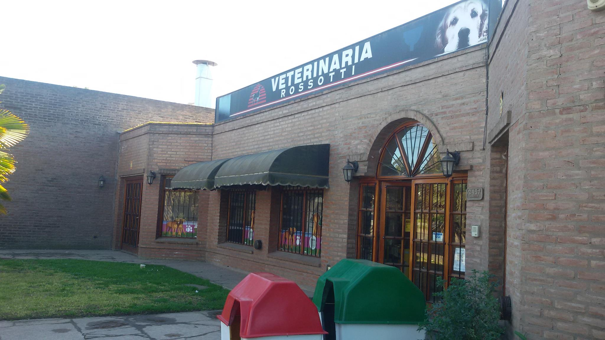

Mision
Ofrecer bienestar tanto animal, como a las familias de nuestros pacientes a través de la prestación de servicios médicos veterinarios y complementarios, entregando calidad y satisfacción, superando las expectativas de nuestros clientes, contribuyendo a la innovación y desarrollo profesional del sector Médico Veterinario de la Región.
En Veterinaria Rossotti nos inclinamos por mantener la salud de las mascotas en perfecto estado, buscando así el bienestar de los que actualmente son considerados miembros importantes de la familia, mediante la óptima y oportunidad atención con compromiso y actitud ética ante nuestros pacientes y sus propietarios.
Ayudar a preservar la salud del hombre, prestando servicios de calidad dirigidos a prevenir, tratar y curar enfermedades de las mascotas con nuestro personal médico altamente calificado y capacitado para mejorar la calidad de vida de nuestros pacientes y proporcionar bienestar a sus propietarios

Vision
Visión
Buscar la excelencia en la prevención, detección y curación de enfermedades en animales de compañía, aumentando el nivel de seguridad sanitaria en quienes conviven con ellos y hacerlo de forma sostenible, rentable, profesional y ética; así como mejorar la relación afectiva entre las mascotas y sus propietarios, generando un mayor equilibrio sanitario y emocional en ambos.
Ser líderes indiscutibles, en servicios médicos veterinarios y complementarios, para brindar a nuestros clientes calidad y profesionalismo, contando con excelentes instalaciones, equipo médico altamente calificado y un departamento de educación continuada con reconocimiento local, nacional e internacional.
Mejorar la calidad de vida de nuestros pacientes y sus familias, creando las condiciones adecuadas de salud y bienestar, manteniendo una constante enseñanza a los propietarios para el mantenimiento de sus mascotas.